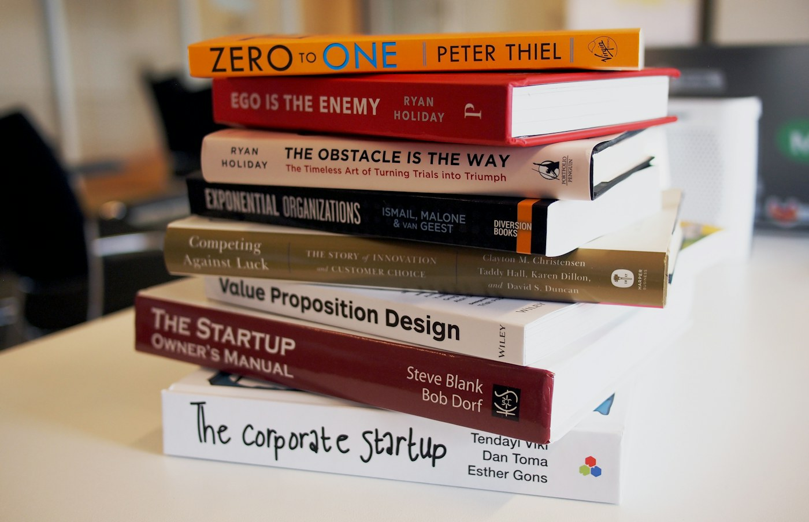

Captura
La página estática recoge nombre, correo e interés y envía JSON mediante POST /contact.
Una guía directa para pasar de una página web a un flujo real con Lambda, API Gateway, DynamoDB y SNS.
Ver contenidos Solicitar el ebook
Construye una aplicación Serverless entendiendo cada pieza: una página estática recoge la solicitud y una API HTTP la entrega a servicios administrados de AWS.
La guía acompaña el recorrido con ejercicios, comprobaciones y un reto final. El objetivo es poder explicar el sistema y demostrarlo con evidencias propias.
Serverless no significa que no existan servidores: significa que AWS administra la infraestructura y escala los recursos según las solicitudes.
La idea clave: diseña responsabilidades pequeñas, conecta servicios mediante contratos claros y paga por uso cuando el servicio lo permite.
Primero se entiende la arquitectura; después se construye, se prueba y se observa cada componente.
El navegador entrega el formulario a API Gateway. Lambda valida la petición y coordina la persistencia y la notificación.
Cada servicio tiene una responsabilidad concreta: hosting, endpoint HTTP, lógica de negocio, datos o distribución de eventos.
El diagrama y las rutas deben coincidir con los recursos que realmente desplegaste.
Comprueba cada salto con una petición independiente antes de conectar el recorrido completo.
Amazon S3 y GitHub Pages pueden servir contenido estático. API Gateway publica una ruta HTTP que invoca una función AWS Lambda.
Las pruebas con curl permiten revisar el backend sin mezclar todavía errores del navegador o de CORS.
Integración HTTP
El body JSON se valida en Lambda antes de guardar o publicar una notificación.
DynamoDB conserva cada solicitud con una clave pensada para el patrón de acceso que necesita la aplicación.
Amazon SNS desacopla la recepción de la solicitud de la entrega de notificaciones a los suscriptores.
Los permisos del Execution Role deben limitarse a las acciones necesarias sobre esos recursos.
CloudWatch permite relacionar una petición con la invocación de Lambda y diagnosticar errores.
Terraform describe la infraestructura, permite revisar un plan antes de aplicarlo y ayuda a repetir el despliegue.
La entrega incluye un repositorio claro, un README útil, un diagrama y evidencias de una ejecución real.
El reto final exige explicar decisiones, demostrar permisos adecuados y diagnosticar antes de cambiar recursos al azar.
La página estática recoge nombre, correo e interés y envía JSON mediante POST /contact.
Lambda valida los tres campos y coordina las acciones mediante su Execution Role.
AWS Lambda · IAMDynamoDB conserva la solicitud y SNS publica una notificación para sus suscriptores.
Amazon DynamoDB · SNSLa práctica conecta el formulario con API Gateway y Lambda; después, el backend valida los campos, persiste la solicitud y publica una notificación.
POST /dev/contact
Proyecto educativo AWS Serverless · 2026
Diseño base: TemplateMo 588